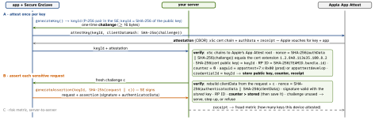

security · folio
In one line: Attestation lets your server ask the platform vendor “is this request coming from my genuine, unmodified app on a genuine device?”. App Attest makes a Secure-Enclave key, has Apple attest it once, then the app asserts (signs) each sensitive request with it; Play Integrity returns a Google-signed verdict about app, device and account. Both are evidence for a server-side risk decision — not authentication, not a jailbreak detector.
Download PDF Print view LaTeX source


App Attest (iOS 14+)
DCAppAttestService.shared: checkisSupported(false on the Simulator; only action, extensible-SSO and watchOS extensions work even iftrue). One key per user per device; persist thekeyId— it cannot be recovered.attestKeycalls Apple’s server:serverUnavailable→ retry later with the same key; any other error → discard the key, start over. Large apps ramp up gradually (Apple’s rollout guidance).- Keys survive app updates, not reinstall, device migration or restore from backup — expect re-attestation, don’t flag it as fraud.
- Entitlement
com.apple.developer.devicecheck.appattest-environment=development|production(theaaguidthe server must expect). - Assertions: unlimited per key; bind them to the request (hash of body + challenge), reserve them for sensitive moments. Newer verification steps also check the validation-category and bundle-version extensions in
authData. - DeviceCheck (
DCDevice.generateToken): your server asks Apple to read / set two bits per device per developer (+ last-update time); they survive reinstall — “promo already used”, not integrity.
Example — client side (the server does all the checking)
let svc = DCAppAttestService.shared
guard svc.isSupported else { return .fallback } // other signals
let keyId = try await svc.generateKey() // persist it
let ch = try await api.challenge() // >= 16 bytes, one-time
let att = try await svc.attestKey(keyId,
clientDataHash: Data(SHA256.hash(data: ch)))
try await api.register(keyId: keyId, attestation: att, challenge: ch)
// later, per sensitive request
let body = try JSONEncoder().encode(order); let c = try await api.challenge()
let sig = try await svc.generateAssertion(keyId,
clientDataHash: Data(SHA256.hash(data: body + c)))
try await api.placeOrder(body, challenge: c, keyId: keyId, assertion: sig)Which one?
| App Attest | DeviceCheck | Play Integrity | |
|---|---|---|---|
| proves | genuine app, key in a real SE | nothing: 2 stored bits | app, device, licence, risk |
| per request | assertion + counter | — | token + requestHash |
| reinstall | key lost | bits survive | new token per call |
Android — Play Integrity API
- Standard request:
prepareIntegrityTokenwarm-up, then a few hundred ms;requestHash= hash of your request; Google mitigates replay. Classic: seconds, your ownnonce, for rare high-value actions. Default quota 10,000 requests/day. - Decrypt on the server: standard → only via Google’s
decodeIntegrityToken; classic may use your own keys (JWE A256KW/A256GCM wrapping a JWS ES256). Never decrypt in the app. - SafetyNet Attestation: deprecated 2022, fully turned down Jan 2025. Lower level: Android Key Attestation (Keystore certificate chain).
appIntegrity | PLAY_RECOGNIZED · UNRECOGNIZED_VERSION · UNEVALUATED |
deviceIntegrity | MEETS_BASIC_ / DEVICE_ / STRONG_ / VIRTUAL_INTEGRITY; empty = hooked, rooted, bad emulator |
accountDetails | LICENSED · UNLICENSED (sideloaded) |
environmentDetails | appAccessRiskVerdict (capturing / overlay apps), playProtectVerdict |
requestDetails | package, requestHash or nonce, timestamp |
Android 13+: MEETS_STRONG_INTEGRITY also needs a security patch from the last year.
Traps
- Checking the attestation in the app — the attacker owns that code. Server only.
- Skipping the counter or reusing challenges → an old assertion replays.
- Hard-blocking when
isSupportedis false or a verdict is missing — locks out real users; tier it: allow, limit, step up, refuse. - A genuine phone in a device farm passes: attestation proves what runs, not who drives it — add rate limits per key and the fraud metric.
- Caching a Play Integrity verdict — Google warns it enables proxying.